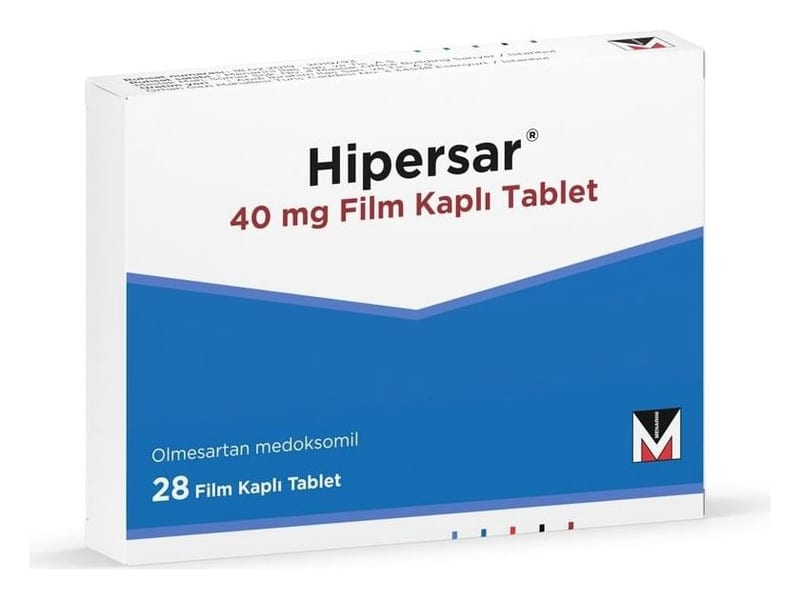

Hipersar 40 mg Film Kaplı Tablet, 28 Adet

Ne için kullanılır
KT · Bölüm 1HİPERSAR kan damarlarını gevşeterek kan basıncının düşürülmesine yardımcı olan, olmesartan medoksomil adlı madde içeren bir ilaçtır. 28 ve 84 adet, bir yüzünde “C15” basılı, beyaz, oval film kaplı tabletler halinde kullanıma sunulmuş tur.
Olmesartan medoksomil anjiyotensin-II reseptör antagonistleri isimli bir ilaç grubuna aittir. HİPERSAR sebebi bilinmeyen yüksek kan basıncı (esansiyel hipertansiyon) tedavisi için doktorunuz tarafından gerekli görüldüğü takdirde yetişkinler ile, 6 ile 18 yaş arasındaki çocuk ve ergenlerde kullanılır. Yüksek kan basıncı, kalp, böbrek, beyin ve göz gibi organlarda kan damarlarına zarar verebilir. Bu durum, bazen kalp krizi, kalp ya da böbrek yetmezliği, inme veya körlük gibi sonuçlar doğurabilir. Genellikle yüksek kan basıncının belirtileri yoktur. Ortaya çıkabilecek zararları engellemek için kan basıncını kontrol etmek önemlidir.
Yüksek kan basıncı, HİPERSAR gibi ilaçlarla kontrol altında tutulabilir. Doktorunuz, kan basıncını düşürmek için hayat tarzınıza dair bazı değişiklikler yapmanızı (kilo vermek, sigarayı bırakmak, alınan alkol miktarını ve yemeklerde kullanı lan tuz oranını azaltmak) ve aynı zamanda yürüyüş ve yüzme gibi rutin egzersizler yapmanızı önerecektir. Doktorunuzun bu tavsiyelerine uymanız önemlidir.